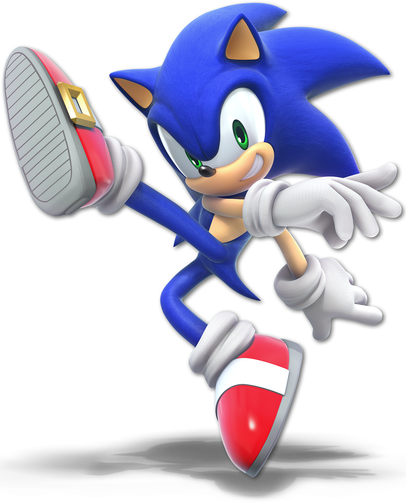

Sonic the Hedgehog
Sonic is the title character and the protagonist of the Sonic the Hedgehog video game series published by Sega. He is one of the world's best-known video game characters and a gaming icon. Sonic is described as a character who is "like the wind": a drifter who lives as he wants, and makes life a series of events and adventures. Sonic hates oppression and staunchly defends freedom. Although he is mostly quick-witted and easygoing, he has a short temper and is often impatient with slower things. Sonic is a habitual daredevil hedgehog who is honest, loyal to friends, keeps his promises, and dislikes tears. In times of crisis, he focuses intensely on the challenge as if his personality had undergone an astonishing change.
"Don’t just sit there and waste your precious time."
“You need to be true to yourself.”
“Gotta go Fast!”
“When you want to do something, do it right away. Do it when you can. It’s the only way to live a life without regrets.”
“An adventure is no fun if it’s too easy!”
“Every world has its end. I know that’s kinda sad, but that’s why we gotta live life to the fullest in the time we have.”
“If the world chooses to become my enemy, I will fight like I always have!”
“I’ll never look back, I’ve got no regrets. Cause time doesn’t wait for me. I choose to go my own way.”